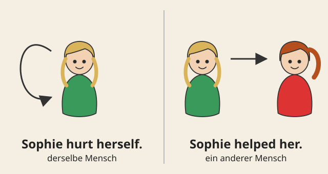

myself: wenn es zurückzeigt
Mit einem KI-Tutor lernen
Ein KI-Tutor erklärt dir diese Seite und hilft dir bei den Aufgaben. Wähl deinen Assistenten:
Mit Claude öffnen Mit ChatGPT öffnen Mit Mistral Vibe öffnen
Du nutzt dein eigenes Konto beim Anbieter. Der Assistent ist kein Angebot von lernapps.net: lernapps liefert nur Inhalte und Aufgaben. Die Wahl gilt für alle Seiten, nur auf diesem Gerät.
Sophies Tagebuch
Nach dem Ausflug zum Kletterpark schreibt Sophie abends in ihr Tagebuch.
Das kannst du danach: Du erkennst, wann im Englischen ein Wort wie myself nötig ist und wann nicht, auch wenn das Deutsche „sich“ sagt.
Aufgabe
Lösung
she
she sagt, wer etwas tut. Nach dem Verb steht ein anderes Wort.
her richtige Antwort
her ist für Ellie, eine andere Person, und steht nach dem Verb.
him
him ist für einen Jungen. Ellie ist ein Mädchen.
Für eine andere Person steht nach dem Verb ein Pronomen wie her.
Lesestück: Ein Tag im Kletterpark
Lies den Tagebucheintrag. Die Zahlen sind die Zeilen. Wörter, die du vielleicht nicht kennst, stehen unter dem Text.
1 · Saturday, 12 July. Dear diary, today was the school trip to the climbing park.
2 · We met at the bus stop at eight. I hurried because I was late again.
3 · Ellie was already there. She sat down on the bench and waited for me.
4 · In the park, Amir fell and hurt himself. It was only a small cut, but he was a bit scared.
5 · Peter is too young for the high wall, so he could not climb with us. He taught himself to juggle with three balls instead!
6 · Mr Hill said, “Look after yourselves, and enjoy yourselves!”
7 · I was afraid of the high wall. I talked to myself: “You can do it, Sophie.”
8 · And I did it! Later I looked at myself in the photo and I could not believe it.
9 · In the evening we all felt tired, but we were proud of ourselves.
10 · Ellie and Amir are making dinner now. Tomorrow I will make myself a big breakfast. Good night!
| Englisch | Beispiel · Hinweis | Deutsch |
|---|---|---|
| hurt | He hurt himself. Er hat sich verletzt. | verletzen |
| cut | He cut himself. Er hat sich geschnitten. | Schnittwunde; schneiden |
| scared | ängstlich, verängstigt | |
| juggle | jonglieren | |
| look after | aufpassen auf | |
| proud of | stolz auf | |
| wall | Wand, hier: Kletterwand | |
| believe | glauben | |
| enjoy yourselves | viel Spaß haben | |
| afraid of | Angst vor | |
| bench | Bank | |
| bus stop | Bushaltestelle | |
| ride a bike | Rad fahren | |
| buy, bought | kaufen | |
| clean, cleaned | putzen, sauber machen |
Aufgaben zum Text
Stufe 1 · Verstehen
Aufgabe
Lösung
Im Kletterpark
Im Park waren sie erst später.
An der Bushaltestelle richtige Antwort
Zeile 2: We met at the bus stop at eight.
In der Schule
Von der Schule ist im Text keine Rede.
Zeile 2 nennt die Bushaltestelle.
Aufgabe
Lösung
Richtige Antwort: Die Aussage stimmt nicht.
Peter war zu jung für die hohe Wand und konnte nicht mit klettern.
Stufe 2 · Belegen mit der Zeile
Aufgabe
Lösung
Zeile 3
Dort sitzt Ellie auf der Bank.
Zeile 4 richtige Antwort
Zeile 4: Amir fell and hurt himself.
Zeile 6
Dort spricht Mr Hill.
Zeile 9
Dort sind alle müde.
Suche das Wort hurt.
Aufgabe
Lösung
Zeile 7 richtige Antwort
Zeile 7: I talked to myself: You can do it, Sophie.
Zeile 8
Dort schaut sie sich auf dem Foto an.
Zeile 9
Dort sind alle stolz.
Zeile 10
Dort geht es um das Abendessen.
Wer spricht dort mit wem?
Stufe 3 · Meinung
Offene Aufgabe
Sophie hatte Angst vor der hohen Wand und hat sich selbst Mut gemacht. Hilft dir das auch, wenn du Angst hast? Schreibe in zwei bis drei Sätzen deine Meinung und einen Grund.
Eine gute Antwort enthält:
- Eine klare Meinung (hilft oder hilft nicht). (Form)
- Ein Grund, zum Beispiel: Man glaubt dann mehr an sich selbst. Nachlesen
- Ganze Sätze mit einem Grund (weil …). (Form)
Lösung
Ja, das hilft mir, weil ich dann nicht nur an meine Angst denke. Ich sage mir: Du schaffst das.
Wenn es zur selben Person zurückzeigt
In Zeile 4 hat sich Amir verletzt: Er tut etwas, und es trifft ihn selbst. Dafür gibt es die fünfte Spalte des Posters: Wer ist es selbst? Das Wort zeigt zur selben Person zurück.

Links geht der Pfeil zur selben Person zurück: herself. Rechts geht er zu einer anderen Person: her.
Quelle: eigene Zeichnung. Lizenz: CC-BY-4.0.| Person | Wer tut es? | Wer ist es selbst? |
|---|---|---|
| ich | I | myself |
| du | you | yourself |
| er | he | himself |
| sie (ein Mädchen) | she | herself |
| es | it | itself |
| wir | we | ourselves |
| ihr | you | yourselves |
| sie (mehrere) | they | themselves |
Das Deutsche sagt „sich“ viel öfter als das Englische. Bei manchen Verben steht im Englischen kein Reflexivpronomen: sich treffen – meet, sich beeilen – hurry, sich hinsetzen – sit down, sich ausruhen – relax, sich entscheiden – decide, sich fühlen – feel. Mit Reflexivpronomen steht dagegen zum Beispiel: sich verletzen – hurt oneself, sich etwas beibringen – teach oneself, sich amüsieren – enjoy oneself. oneself steht hier für myself, yourself, himself und so weiter, je nach Person.
Merke
Das Reflexivpronomen steht vor allem, wenn dieselbe Person etwas tut und es sie selbst trifft. Es kann auch „selbst“ betonen: You can do it yourself. Bei meet, hurry, sit down, relax, decide und feel schreibst du nichts dazu. himself und themselves haben self und selves: nicht „hisself“ und nicht „theirselves“.
Übung
Aufgabe
Lösung
him
him ist für eine andere Person. Hier lernt Peter selbst.
himself richtige Antwort
himself zeigt zu Peter zurück.
herself
herself ist für ein Mädchen. Peter ist ein Junge.
Dieselbe Person: himself.
Aufgabe
Lösung
themselves
themselves meint andere. Sophie gehört selbst dazu.
ourselves richtige Antwort
ourselves meint die sprechende Person und andere.
ourself
Bei mehreren heißt es ourselves, mit selves.
Wir beide: ourselves.
Aufgabe
Lösung
herself
herself wäre Ellie selbst. Hier schaut Ellie auf Sophie.
she
she steht vor dem Verb, nicht danach.
her richtige Antwort
her ist für eine andere Person, hier Sophie.
Eine andere Person: her, nicht herself.
Aufgabe
Lösung
Richtige Antwort: sich treffen – meet; sich beeilen – hurry; sich hinsetzen – sit down; sich ausruhen – relax; sich entscheiden – decide
Diese Verben haben im Englischen kein Reflexivpronomen, obwohl das Deutsche „sich“ sagt.
Aufgabe
Lösung
We hurry ourselves to school.
Bei hurry steht kein Reflexivpronomen.
We hurry us to school.
Bei hurry steht auch kein us.
We hurry to school. richtige Antwort
hurry braucht hier nichts dazu.
Das Verb hurry steht allein.
Aufgabe
Schreibe den Satz auf Englisch.
- Ich beeile mich.
- Wir treffen uns um acht.
- Er hat sich geschnitten.
- Ich habe mich verletzt.
Lösung
- I hurry. (auch richtig: I'm hurrying.; I am hurrying.)
- We meet at eight. (auch richtig: We are meeting at eight.)
- He cut himself. (auch richtig: He has cut himself.; He 's cut himself.)
- I hurt myself. (auch richtig: I have hurt myself.; I 've hurt myself.)
Aufgabe
Lösung
Richtige Antwort: Die Aussage stimmt nicht.
Bei feel steht kein Reflexivpronomen: I feel tired.
Aufgabe
Hör zu und schreibe, was du hörst.
- KI
- KI
- KI
Lösung
- I bought myself a new phone.
- He bought himself a ticket.
- The cat cleaned itself.
Aufgabe
Ergänze die Spalte „Wer ist es selbst?“ ohne nachzusehen.
| Person | Wer tut es? | Wer ist es selbst? |
|---|---|---|
| ich | I | … |
| du | you | … |
| er | he | … |
| sie (ein Mädchen) | she | … |
| es | it | … |
| wir | we | … |
| ihr | you | … |
| sie (mehrere) | they | … |
Lösung
- ich · I · myself
- du · you · yourself
- er · he · himself
- sie (ein Mädchen) · she · herself
- es · it · itself
- wir · we · ourselves
- ihr · you · yourselves
- sie (mehrere) · they · themselves
Selbst sagen und schreiben
Aufgabe
Hör zu, sprich nach und nimm dich auf. Vergleiche dann mit dem Original.
Tipp
Hör das Beispiel zuerst. Sprich dann langsam nach und vergleiche deine Aufnahme mit dem Original.
- You can do it yourself.KI
- We can help ourselves.KI
- Help yourselves, please.KI
Zum Aufnehmen braucht diese Aufgabe JavaScript. Die Beispiele kannst du auch ohne anhören.
Lösung
- You can do it yourself.
- We can help ourselves.
- Help yourselves, please.
Offene Aufgabe
Schreibe zwei englische Sätze über etwas, das du dir selbst beigebracht oder gemacht hast. Benutze myself in einem Satz und ein Verb ohne Reflexivpronomen im anderen.
Eine gute Antwort enthält:
Lösung
I taught myself to play the guitar. I relax on the sofa after school.
Wie es weitergeht
Auf dem Poster steht jetzt auch die Spalte „Wer ist es selbst?“. Im Tagebuch kommen auch Ellie und Amir vor. Auf der nächsten Seite liest du einen Dialog mit ihnen. Dort helfen sie sich an der Wand gegenseitig, und du lernst, warum das nicht themselves heißt.
Fehler gefunden oder eine Idee für diese App?